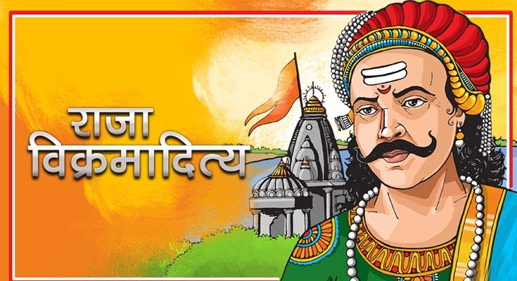

ઘણા દિવસો પછી કર્ણાટક પહોંચ્યા, અને શહેરમાંથી લટાર મારતા રાજાના મહેલોની નીચે પહોંચ્યા, ત્યાં તેઓ શું જુએ છે, પરંતુ એક વૃદ્ધ સ્ત્રી તેના દરવાજે બેઠી છે અને તેનું કપાસ ચલાવી રહી છે. બંને, ત્યાંથી ઉતરી રહ્યા છે. તેમના ઘોડાઓ તેમની પાસે આવ્યા અને કહેવા લાગ્યા, 'મા! અમે વેપારી પ્રવાસી છીએ, અમારો માલ અમારી પાછળ પાછળ આવી રહ્યો છે; અમે રહેવાની જગ્યા શોધવા આગળ આવ્યા છીએ; જો તમે અમને સ્થાન આપો તો અમે રહીશું.' તેઓના ચહેરા જોઈને અને તેમની વાત સાંભળીને વૃદ્ધ સ્ત્રીને તેમના પર દયા આવી અને કહ્યું, 'આ ઘર તમારું છે, જ્યાં સુધી તમે ઈચ્છો ત્યાં સુધી અહીં રહો.' ટૂંકમાં, આ સાંભળીને તેઓએ ઘરનો કબજો મેળવ્યો, અને થોડો વિલંબ પછી વૃદ્ધ સ્ત્રી આવી અને દયાળુપણે તેમની સાથે બેઠી, અને તેમની સાથે ગપસપ કરવા લાગી, આના પર, મંત્રીના પુત્રએ તેણીને પૂછ્યું, 'તમારે શું કુટુંબ અને સંબંધ છે? અને yoii કેવી રીતે જીવે છે?' વૃદ્ધ સ્ત્રીએ કહ્યું, 'મારો પુત્ર રાજાની સેવામાં ખૂબ જ આરામથી પૂરો પાડવામાં આવે છે, અને તમારી નમ્ર સેવક પદ્માવતીની ભીની-નર્સ છે, જે રાજાની દાત્ર છે; વૃદ્ધાવસ્થાના પરિણામે હું ઘરે જ રહીશ, પણ રાજા મારા ભરણપોષણ માટે પૂરો પાડે છે. જો કે, હું દિવસમાં એક વખત તે છોકરીને જોવા નિયમિત જાઉં છું; ત્યાંથી પાછા ફરતી વખતે, મારા ઘરે, એકલા, હું મારા દુ:ખને વેગ આપું છું."
આ શબ્દો સાંભળીને રાજકુમાર હ્રદયમાં પ્રસન્ન થયો, અને વૃદ્ધ સ્ત્રીને કહ્યું, 'આવતીકાલે જ્યારે તમે શરૂઆત કરો છો, ત્યારે કૃપા કરીને મારા તરફથી પણ એક સંદેશ લઈ જાવ.' તેણીએ જવાબ આપ્યો, 'દીકરા! તેને આવતીકાલ સુધી સ્થગિત કરવાની શું જરૂર છે? હું આ ક્ષણે તારો કોઈપણ સંદેશો પહોંચાડીશ જે તમે મને સંભળાવશો.' પછી તેણે કહ્યું, 'તમે જઈને તેને આ કહો કે જેઠ મહિનાના અર્ધપાઠના દિવસે જે રાજકુમારને તમે ટાંકીના હાંસિયામાં જોયો હતો તે અહીં આવી પહોંચ્યો છે.'
"આ શબ્દો સાંભળીને વૃદ્ધ સ્ત્રી તેની લાકડી લઈને મહેલમાં ગઈ. જ્યારે તે ત્યાં પહોંચી ત્યારે તેણે રાજકુમારીને એકલી બેઠેલી જોઈ. જ્યારે તે તેની સામે આવી ત્યારે તેણે (રાજકુમારી) તેને સલામ કરી. વૃદ્ધ વોરાઓએ તેને આશીર્વાદ આપ્યા, અને કહ્યું, 'દીકરી! મેં તારી નાનપણમાં તને સંભાળી, અને દૂધ પીવડાવ્યું. ભગવાને હવે તને મોટી કરી છે: હવે મારું હૃદય શું ઈચ્છે છે કે, હું તને તારી આસ્થામાં સુખી જોઉં, પછી હું પણ પ્રાપ્ત કરું. આરામ.' થેસી જેવા સ્નેહભર્યા શબ્દોમાં તેણીને સંબોધીને તેણે આગળ કહ્યું, 'જે રાજકુમાર જેનું હૃદય તમે અડધા જેઠના પાંચમા દિવસે, કુંડની બાજુમાં બંદી બનાવી લીધું હતું, તે મારા ઘરે ઊતર્યો છે, (અને) મોકલ્યો છે. તમને આ સંદેશ, તમે તેને આપેલું વચન પૂર્ણ કરવા માટે, હવે જ્યારે તે આવી પહોંચ્યો છે. અને હું તમને કહું છું, મારા તરફથી, તે રાજકુમાર તમારા માટે લાયક છે, અને સ્વભાવ અને માનસિક ગુણોમાં તેટલો જ ઉત્તમ છે જેટલો તમે સુંદર છો. .'"

" આ શબ્દો સાંભળીને તે ગુસ્સે થઈ ગયો, અને તેના હાથમાં ચપ્પલ લગાવી, અને વૃદ્ધ સ્ત્રીના ચહેરા પર થપ્પડ મારીને કહેવા લાગી, 'દુઃખ 1 મારા ઘરની બહાર નીકળ!' તે નારાજ થઈને ઉભી થઈ, અને તે જ હાલતમાં ચાલી ગઈ. , સીધો રાજકુમાર પાસે ગયો અને તેની સાથે બનેલી બધી વાત કહી. રાજકુમાર આ શબ્દો સાંભળીને આશ્ચર્યચકિત થઈ ગયો. પછી મંત્રીનો પુત્ર બોલ્યો, 'મહાન રાજા 1 ચિંતા કરશો નહીં, આ બાબત તમારી સમજમાં આવી નથી.' આથી તેણે કહ્યું, 'સાચું; તો પછી તમે તેને સમજાવો, જેથી મારા મનને આરામ મળે.' તેણે કહ્યું, 'દસ આંગળીઓ પર ચંદન લગાવીને, અને (સ્ત્રી)ના ચહેરા પર પ્રહાર કરીને, તેણે જાણ કરી કે જ્યારે ચાંદનીની દસ રાત પૂરી થશે, ત્યારે તે તમને અંધારામાં મળશે."
" ટૂંકમાં કહીએ તો, દસ દિવસ પછી વૃદ્ધ સ્ત્રી ફરી ગઈ અને તેની જાહેરાત કરી; પછી તેણે તેની ત્રણ આંગળીઓને સફિરોનથી ટિંગ કરી, અને તેને તેના ગાલ પર મારતા કહ્યું, 'મારા ઘરની બહાર નીકળો!' છેવટે, વૃદ્ધ સ્ત્રી. નિરાશ થઈને ત્યાંથી ખસી ગયો, અને આવીને રાજકુમારને જે બન્યું હતું તે બધું સંભળાવ્યું.તે સાંભળતાની સાથે જ તે દુ:ખના સાગરમાં ડૂબી ગયો.તેની આ દશા જોઈને મંત્રીના પુત્રએ ફરીથી કહ્યું, 'ગભરાશો નહિ. આ બાબતનો હેતુ કંઈક બીજો છે.' તેણે જવાબ આપ્યો, 'મારું હૃદય અસ્વસ્થ છે, મને જલ્દી કહો.' પછી તેણે કહ્યું, 'દર મહિને સ્ત્રીઓ જે સ્થિતિમાં હોય છે તે સ્થિતિમાં તે છે, અને તેથી તેણે વધુ ત્રણ દિવસની મુદત આપી છે, ચોથા દિવસે તે તમને મોકલશે.' ટૂંકમાં, જ્યારે ત્રણ દિવસ વીતી ગયા, ત્યારે વૃદ્ધ સ્ત્રીએ રાજકુમારની તબિયત વિશે પૂછપરછ કરી. પછી તે વૃદ્ધ સ્ત્રીને ગુસ્સામાં પશ્ચિમની વિકેટ પર લઈ આવી, અને તેને બહાર કાઢી. ફરીથી વૃદ્ધ સ્ત્રીએ આવીને રાજકુમારને જાણ કરી. આ ઘટના: તે સાંભળીને તે કાસ્ટ ડાઉન થઈ ગયો. આના પર મંત્રીના પુત્રએ કહ્યું, 'અફેરનો ખુલાસો એ છે કે તેણીએ તમને તે વિકેટના માર્ગે રાત્રે બોલાવ્યા છે.' આ સાંભળીને તે અસંખ્ય ખુશ થઈ ગયો. ટૂંકમાં કહીએ તો, જ્યારે સમય આવ્યો, ત્યારે તેઓએ બ્રાઉન પોશાક પહેર્યા, તેમને ગોઠવ્યા, તેમની પાઘડીઓ બાંધી, પોશાક પહેર્યો, તેમના હથિયારો તેમની આસપાસ ગોઠવ્યા, અને તૈયાર હતા; આ સમયે મધ્યરાત્રિ પસાર થઈ ગઈ હતી. તે સમયે એક સાર્વત્રિક નિશ્ચિંતતા પ્રવર્તતી હતી, અને તેઓ પણ અખંડ મૌનથી તેમનો માર્ગ અપનાવતા હતા."
| પેજ નંબર ૭ | ||